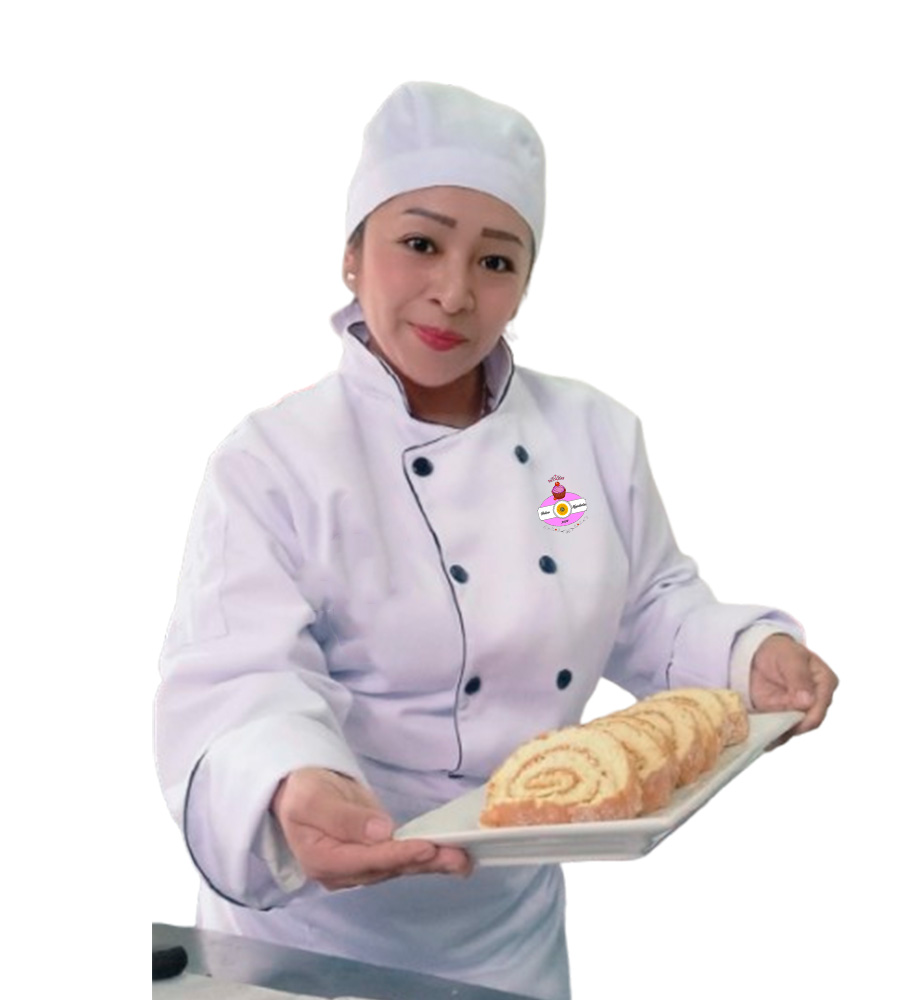

Distritos de cobertura: Chosica, Santa Eulalia - Horario atención : 10:00 am a 9:00 pm
Dulces Majaderías

Nosotros
Lo que comenzó como un dulce sueño de infancia, hoy se ha convertido en una realidad llena de sabor, arte y dedicación.
Dulces Majaderías nació gracias a la pasión de Sara Carolina Julca, técnica contable y amante de los postres, quien, después de años de esfuerzo y aprendizaje, decidió darle vida a su gran deseo de alegrar corazones a través de postres dulces y detalles únicos.
Este emprendimiento empezó de a pocos, impulsado por el inmenso amor a su hijo Gabriel y por la motivación e inspiración de alguien cercano, quienes la motivaron a perseguir este sueño para compartir más tiempo juntos y construir un futuro mejor. Gracias a ese respaldo, y a cada cliente que nos brindó su confianza, fuimos avanzando paso a paso hasta convertirnos en lo que hoy somos.
Dulces Majaderías no nació de la nada: es el resultado de años de esfuerzo, sacrificio y sueños construidos con paciencia y dedicación. Cada paso estuvo marcado por el amor a lo que hacemos, desde la producción hasta el cuidado de cada detalle administrativo. Todo este camino nos enseñó a valorar el compromiso, la constancia y la importancia de poner el corazón en cada creación, porque cada dulce lleva consigo una historia de pasión y esfuerzo.
Hoy somos una empresa dedicada a elaborar postres únicos, caprichos dulces y detalles especiales para cada ocasión, convencidos de que cada momento puede volverse inolvidable cuando se acompaña de algo hecho con amor. Gracias por ser parte de esta historia y por permitirnos seguir endulzando sus momentos especiales